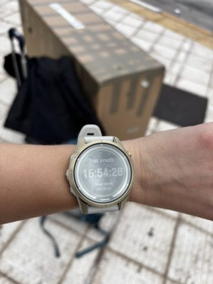
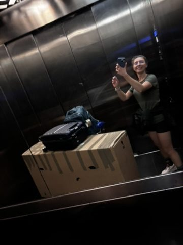
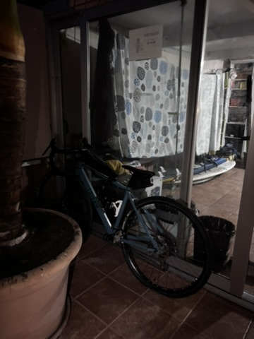
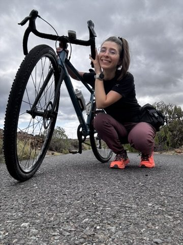
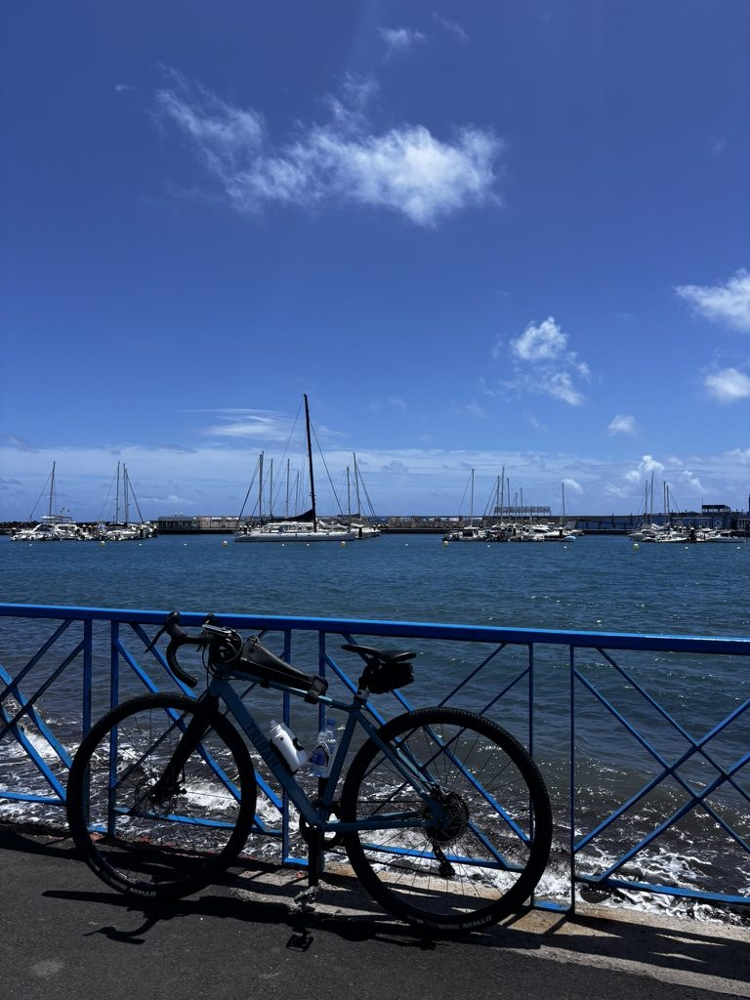
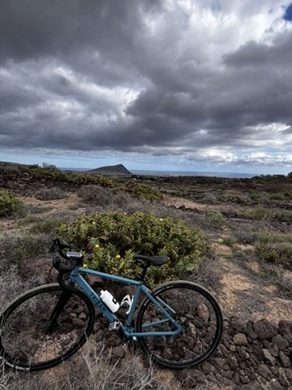
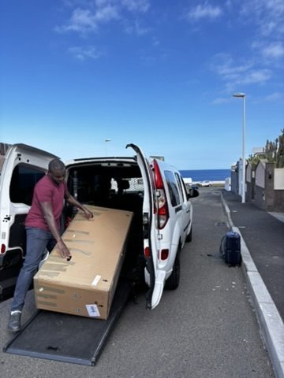
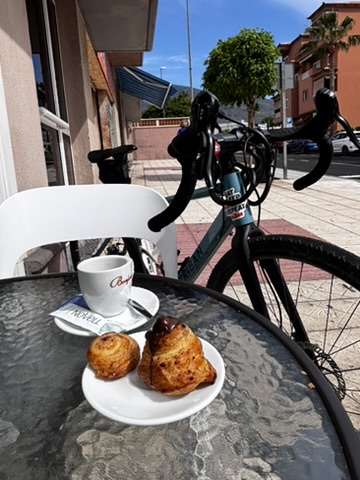

Tenerife is one of the best cycling islands in the world. Professional teams train here in winter — the climate is stable, the altitude range is extraordinary (you can ride from sea level to 2,000 metres without leaving the island), and the roads in the interior are smooth and largely empty outside the tourist zones. I knew all of this before I arrived. What I didn't know was how the trip would end.

As soon as I landed: time synced, moon synced, everything aligned. This one was going to be good.
The moment I landed I felt it — one of those arrivals where the light is right, the air is different, and something in the timing of things clicks into place. The moon was up before the sun had finished setting. I was off a plane with a bicycle in a bag and a very optimistic plan. Everything aligned. The island said yes.
The elevator situation

The elevator. The bike bag. The panniers. The will to live. Feeling strong.
Travelling with a bicycle is a logistical exercise that nobody fully explains to you in advance. The bike goes in a bag. The bag is large. You also have panniers and a regular bag. Getting all of this into a hostel elevator — alone, at 10pm, after a flight — is the kind of problem that builds character. I got it in on the third attempt. The door closed. I stood inside, surrounded by my own luggage, feeling very strong.
Hostel life with a bike

Hostel life, bike edition. The bike got the best spot in the room. Obviously.
Hostels and touring bikes coexist better than you'd expect. Most hostel staff have seen stranger things and most cyclists are light sleepers who go to bed early — a combination that works well in a dorm. The bike took up more space than the people but it was also the most organised item in the room, which gave it a certain moral authority.
I reassembled it in the courtyard, adjusted the saddle height for the hundredth time, and felt the specific excitement of having a bicycle in a new place — the knowledge that the entire island is now accessible in a way it wasn't the night before.
On the road

Happy with her, on the road again. The bike and I have an understanding.
The first morning out I understood immediately why Tenerife is a cyclist's island. The roads in the south are flat and fast; the interior roads climb steadily into cool air and pine forest; the north coast has switchbacks with views that make you brake involuntarily. All of it is rideable. All of it is good.

Tenerife roads. Empty, smooth, dramatic. The interior of this island is a different planet.

The coastal route. The sea is always there when you look left.
The bushes

Avoiding the highway. Found the bushes instead. This was not the plan.
Tenerife has a motorway running along the coast. Bicycles are not allowed on motorways. This is a reasonable rule that creates an unreasonable navigational situation when the only road between two points is the motorway and the alternative is a dirt track that turns into a scramble through dense scrub.
I chose the scrub. The scrub chose me back, with some enthusiasm. At one point the bike and I were entirely inside a bush, working out the geometry of extracting both of us without losing anything important. This is the part of bicycle touring that doesn't make it into the Instagram posts — the ten minutes of being genuinely in trouble in vegetation, speaking very quietly to yourself about the decisions that led here.
I got out. The bike was fine. I had a scratch on my arm that I'd forgotten about by lunch.
Amazing people

All over the place. Amazing people jumping to help. This is consistently what happens when you look lost enough.
On a separate occasion — there were several occasions — I was visibly lost and several people materialised immediately to help. This is something I've noticed about cycling with panniers in a place where people don't often see it: you become approachable. People want to know where you're going, where you've come from, whether you need anything. More than once someone drew me a route on their phone, pointed out a shortcut, or flagged me down to warn me about a road closure ahead.
The world is full of people who will help a cyclist in trouble. This is a consistently true thing across countries and languages and I will keep testing it.
The guilty stop

The short guilty stop. I was supposed to be cycling. I was having coffee. These things are not incompatible.
Every ride of any length contains at least one stop that you didn't plan and feel mildly guilty about because you're not moving and moving is the point. You find a café with a view, or a bench at the right moment, or someone sells you something from a roadside stall that you didn't know you needed. You stop. You stay longer than you meant to. You get back on the bike slightly better than you got off it.
The guilty stop is not a failure of discipline. It is the ride doing what the ride is supposed to do.
The bike's new owner

The Argentinian guy who got the bike. He needed it more than I needed to take it home. Simple as that.
At the end of the trip I gave the bike away.
There was an Argentinian guy — I'd met him at the hostel, he was travelling on a budget that didn't include transportation beyond his feet, he mentioned the island was bigger than he'd expected — and I had a bicycle I'd have to disassemble, bag, and pay to check on the flight home. The maths were straightforward. The bike was more useful to him than it was to me in a bag on a conveyor belt.
I handed it over in the hostel courtyard. He checked the gears, adjusted the saddle height — of course — and rode it in a small circle with a grin that made the whole decision immediately correct.
The bike that came with me to Tenerife didn't come back. It stayed on the island and kept going. That's a better ending than a storage unit.